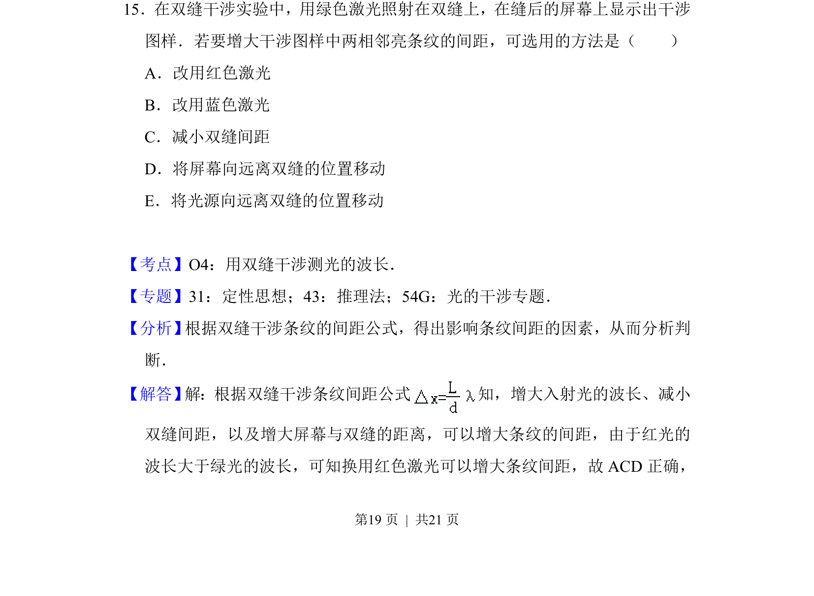
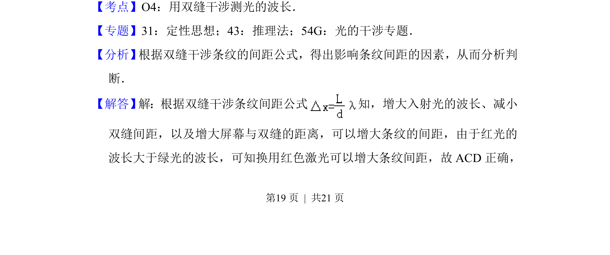
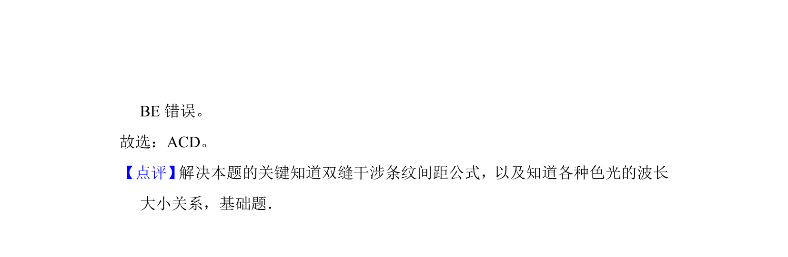

考点：波动光学 双缝干涉 光的波动性 光学

双缝干涉实验中，分析改变激光颜色、缝间距、屏距等操作对相邻亮纹间距的影响。


📄 原 PDF 第 19 页：
素材/真题/吉林/2008-2024·（吉林）物理高考真题/2017年高考物理试卷（新课标Ⅱ）（解析卷）.pdf
15．在双缝干涉实验中，用绿色激光照射在双缝上，在缝后的屏幕上显示出干涉 图样．若要增大干涉图样中两相邻亮条纹的间距，可选用的方法是（ ） A．改用红色激光 B．改用蓝色激光 C．减小双缝间距 D．将屏幕向远离双缝的位置移动 E．将光源向远离双缝的位置移动
【考点】O4：用双缝干涉测光的波长．菁优网版权所有 【专题】31：定性思想；43：推理法；54G：光的干涉专题． 【分析】 根据双缝干涉条纹的间距公式，得出影响条纹间距的因素，从而分析判 断． 【解答】 解：根据双缝干涉条纹间距公式 知，增大入射光的波长、减小 双缝间距，以及增大屏幕与双缝的距离，可以增大条纹的间距，由于红光的 波长大于绿光的波长，可知换用红色激光可以增大条纹间距，故ACD正确，